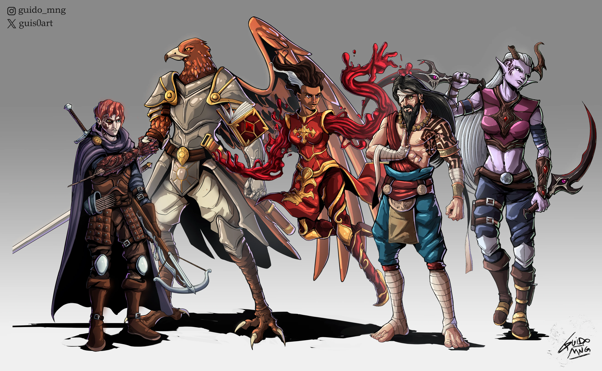

Why Character Creation Matters
In Dungeons & Dragons, your character shapes the way you experience the game. Some players enjoy powerful melee attacks, while others prefer stealth, healing, or magic. Learning the basics before you begin can help you choose a character that fits your style and makes the game more fun.
Step-by-Step Starter Guide
The following steps are a simple way for a beginner to build a first character.
-
Choose a class
- Fighter - strong, simple, and great for beginners
- Wizard - powerful magic but more complex
- Rogue - stealthy and quick
- Cleric - healing, support, and solid defense
-
Pick a race
- Human - flexible and balanced
- Elf - agile and often magical
- Dwarf - durable and dependable
- Dragonborn - powerful and known for breath attacks
-
Decide on your playstyle
- Do you want to fight up close?
- Do you want to cast spells from a distance?
- Do you want to support the team with healing?
-
Learn your starting abilities and equipment
- Read your class features
- Practice your main attacks or spells
- Understand the dice roll tied to your actions
Fantasy Inspiration
Visual examples can help new players imagine the type of character they want to play.

Classes Explained
Fighter
Fighters are one of the best choices for beginners because they are durable, straightforward, and effective in combat. They often use weapons, armor, and simple battle tactics.
Wizard
Wizards use arcane magic and have access to many spells. They are powerful, but they usually have lower health and require more planning than other classes.
Rogue
Rogues are agile, stealthy, and good at precision attacks. They are a strong choice for players who enjoy sneaking, strategy, and quick movement.
Cleric
Clerics combine support and combat. They can heal allies, protect the party, and still contribute strong offensive or defensive abilities.
Special and Inspired Archetypes
Dragoon (Inspired)
While Dragoon is not an official core D&D class, it is a popular fantasy-inspired archetype known for spear combat, mobility, and dramatic jumping attacks. It can be used as creative inspiration for a custom character concept.
Undead Warlock
The Undead Warlock is a darker magical option tied to supernatural or undead power. It is a subclass choice that can appeal to players who enjoy eerie themes, fear effects, and survival-focused magic.
Races Explained
Human
Humans are balanced and adaptable, making them an excellent beginner race.
Elf
Elves are often associated with agility, precision, and magical talent.
Dwarf
Dwarves are known for resilience, strength, and dependable defense.
Dragonborn
Dragonborn are dragon-like humanoids with powerful presence and a signature breath weapon, making them a bold and exciting race choice.
Examples of Beginner-Friendly Abilities
Understanding a few simple powers can help new players feel more confident.
Fire Bolt
Class: Wizard
Use: Ranged spell attack
Dice: Roll 1d20 to hit, then 1d10 fire damage
Cure Wounds
Class: Cleric
Use: Heals a nearby ally
Dice: Roll 1d8 plus modifier for healing
Sneak Attack
Class: Rogue
Use: Extra damage when attacking strategically
Dice: Weapon damage plus sneak attack dice when conditions are met
Helpful Beginner Video
This section includes an embedded YouTube video for new players.
Popular Character Choices
This interactive Tableau visualization highlights the popularity of different Dungeons & Dragons classes, races, and subclasses. It helps show which character types are commonly chosen by players.

Final Advice for New Players
The best beginner character is not always the strongest one. It is the one that matches the way you want to play. Choosing a class, race, and style that feels exciting to you will make your first D&D experience much more enjoyable.